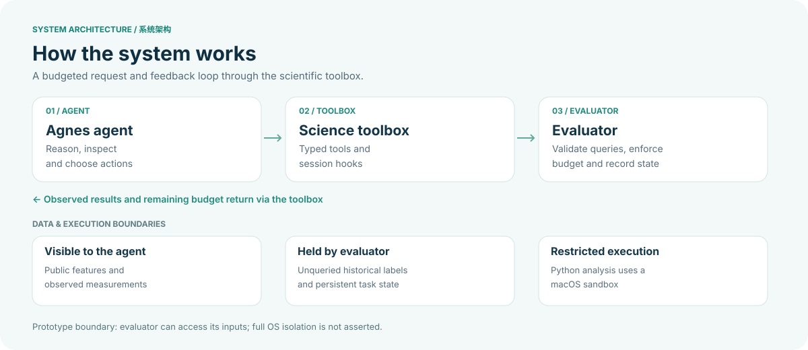

An agent with tools
Agnes inspects public features, proposes hypotheses and selects its next legal query through registered science tools.
From the agent's next question to a checked conclusion, every measurement is revealed through a budgeted evaluator.

Swipe horizontally to explore the diagram →
Agnes inspects public features, proposes hypotheses and selects its next legal query through registered science tools.
The evaluator checks requests, accounts for the query budget, stores task state and reveals measurements only after a valid query.
Predictions and rationale precede feedback; observed controls and unresolved questions support the final conclusion.